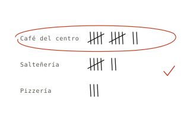

Four projects, all live
All built with a team. For each one I note which part was mine.
-

Plate 1 — The Salar de Uyuni as a Mars analogue. Pacha-X
NASA Space Apps Challenge · Cochabamba venue
Maps the Moon and Mars and links each region to its analogue sites on Earth, for research and astronaut training. It puts Bolivian sites such as the Salar de Uyuni on the map. Available in Spanish and English.
- My part
- Tech lead. Architecture, the Supabase data model with row-level security, scientific data curation, internationalisation, deployment, and the pitch to the judges.
- Stack
- React · TypeScript · Vite · Leaflet · 3D globe · Supabase · Vercel
-
Plate 2 — A certificate you can verify by QR code. AdmCursos UMSS
Universidad Mayor de San Simón
Runs a university's courses end to end: course offering, groups, instructors, pre-registration, attendance, reports, and PDF certificates that can be verified with a QR code.
- My part
- Architect and full stack. Monorepo, PostgreSQL schema and migrations, REST API, authentication, the certificate module, security hardening, and deployment.
- Stack
- React · Tailwind · Express · PostgreSQL · Drizzle ORM · Zod · PDFKit
-

Plate 3 — The group vote, counted by hand. Gustitos y Cafecitos
Social app
For deciding where to go out: you create a group, everyone suggests restaurants and cafés, and you vote. Invites by code or link, notifications, an admin panel and account recovery.
- My part
- Full stack. The whole backend with JWT auth, the group and voting logic, the React interface, and CI/CD with GitHub Actions.
- Stack
- React 19 · TypeScript · Express 5 · MongoDB · JWT · GitHub Actions
-

Plate 4 — A technician's schedule. Servineo
Services marketplace
Connects households in Cochabamba with qualified technicians: location-based search, profiles, and online appointment booking.
- My part
- Scheduling module. Creating, editing and cancelling appointments, a responsive calendar, availability rules, and Google Calendar integration.
- Stack
- Next.js · TypeScript · Material UI · Express · MongoDB · Google Calendar API
Other projects
Smaller ones, or built to practise something specific.
| Sheet | Project | What it is | Stack | Year |
|---|---|---|---|---|
| S·05 | SansiStore open ↗ | A university e-commerce site with orders, deliveries and returns. I built the returns flow, geographic validation for deliveries, and the end-to-end tests. | Astro · React · Firebase · Playwright | 2026 |
| S·06 | DevCV | A CV and portfolio generator for developers: sign-up, experience, skills, GitHub integration and reports. | React · TypeScript · Tailwind | 2026 |
| S·07 | Recetitas | An installable app (PWA) for saving recipes and sorting them by craving. | React · Express · PWA | 2026 |
| S·08 | Point of sale | A checkout with stackable promotions and cash, card or QR payments. Written with the Factory, Decorator and Strategy patterns. | Python · OOP | 2026 |
| S·09 | Auth API | Users, roles and JWT authorisation, served over HTTPS and HTTP/2. | Node.js · Express · MongoDB | 2025 |
| S·10 | School management | A platform for institutes with admin, teacher and student dashboards, enrolment, discounts and payment receipts. | PHP · MySQL · JavaScript | 2025 |
The route so far
Each point is a milestone, a job or a course. The altitude doesn't measure anything in particular; it just goes up.
-
09Nov 2026
NASA Space Apps Challenge hackathon
Cochabamba venue. I led the team that built Pacha-X.
-
08Aug 2026
Speaker at Microsoft Tech Day Cochabamba
Gave the talk “Power BI, Data Science and Big Data” at UMSS, with Microsoft Student Ambassadors. Received a speaker certificate. See the post ↗
-
07Aug & Oct 2025
SIREPE operator
Departmental Electoral Tribunal, on the preliminary results system for Bolivia's 2025 general election: first round and runoff.
-
06Aug 2025 · 48 h
Cybersecurity and server attack prevention
Academia Tecnológica Génesis.
-
052025 – now
Full stack developer
Web products in agile teams: Scrum, Git flow, code review, CI/CD and continuous deployment to Vercel, GitHub Pages and Render.
-
04Mar – Apr 2025 · 130 h
Python programming
Universidad Pública de El Alto.
-
03Sep – Oct 2024 · 320 h
English, three courses back to back
Basic and Intermediate English Course, 160 h (UMSS). Basic English and Intermediate English, 80 h each (Sociedad Académica para el Desarrollo Educativo).
-
02Ongoing · 8th semester
Computer Engineering
Universidad Mayor de San Simón, Cochabamba.
-
012011 – 2022
High school diploma
Colegio Esclavas del Sagrado Corazón de Jesús.
What I work with
And where I've used it, so it's more than a list.
Frontend
- React
- Pacha-X, AdmCursos, Gustitos, SansiStore, DevCV, Recetitas
- TypeScript
- Pacha-X, Gustitos, Servineo, DevCV
- Next.js · Astro
- Servineo · SansiStore
- Tailwind · Material UI
- AdmCursos, DevCV · Servineo
- Leaflet
- The maps in Pacha-X
Backend & data
- Node.js · Express
- AdmCursos, Gustitos, Servineo, Recetitas, Auth API
- PostgreSQL · Drizzle
- AdmCursos
- MongoDB
- Gustitos, Servineo, Auth API
- Supabase · Firebase
- Pacha-X · SansiStore
- JWT · Zod
- Gustitos, Auth API · AdmCursos
- Python · Power BI
- Point of sale · the Tech Day talk
- PHP · MySQL
- School management
Delivery & teamwork
- Git · GitHub Actions
- Every project · CI/CD for Gustitos
- Vercel
- Pacha-X, Servineo, SansiStore
- GitHub Pages
- AdmCursos, Gustitos
- Playwright
- End-to-end tests for SansiStore
- Scrum · Git flow
- Team work, with code review
- Cisco Packet Tracer
- Network design and simulation
Spanishnative
Englishupper intermediate
Write to me
About a project, a talk or a question. In English or Spanish.